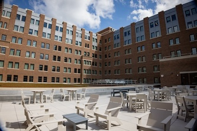
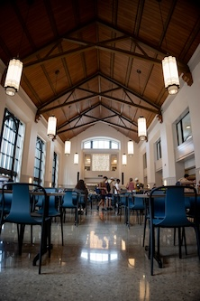

Starting Your Engaged Learning Project
The beginning of an engaged learning project is an
important time for establishing professional communication,
building relationships, and creating shared expectations
with your project partner.
As you begin working with your client or community partner,
focus on communicating clearly, listening carefully,
understanding project goals, and developing agreements
that can guide your work throughout the experience.
Professional Communication
Strong communication helps establish a productive
relationship with your project partner. Early communication
should introduce your team, clarify the purpose of the
project, and begin establishing expectations for how you
will work together.

Initial Client Communication
When contacting a client or community partner for the
first time, introduce yourself and your team clearly
and professionally. Explain the purpose of the project
and identify the next steps for beginning the
collaboration.
The Initial Client Email Examples resource provides
examples that can help students prepare professional
introductory communication with project partners.
Initial Client Meetings
Early meetings provide an opportunity for students and
partners to begin developing a shared understanding of
the project. Use these conversations to learn about the
partner's goals, priorities, expectations, and project
context.
Prepare for the First Meeting
Before meeting with your project partner, prepare
questions and identify the information your team needs
to better understand the project. A clear meeting
structure can help the team use the conversation
effectively.
The Initial Client Meeting Sample Agenda can help
students organize an early conversation with a
project partner.
Building a Strong Partnership
Engaged learning depends on relationships between students
and project partners. At the beginning of the experience,
take time to discuss how students and partners will
collaborate and communicate throughout the project.

Student-Client Partnership Toolkit
The Ginsberg Center Student-Client Partnership Toolkit
can support conversations about building a respectful
and productive relationship between students and
project partners.
Student-Client Partnership Guide
The Student-Client Partnership Guide provides
additional guidance for establishing a collaborative
relationship and creating a shared understanding of
the project.
Establishing Expectations
Clear expectations can help students and partners work
together more effectively. Discuss responsibilities,
communication practices, project goals, and commitments
early in the experience.
Partnership Agreements
Partnership agreements can document expectations
between students, project partners, and the Engaged
Learning Office. These agreements can help clarify
responsibilities and establish a shared foundation
for the project.
The Student Org-ELO Partnership Agreement Template
is available as a resource for establishing project
expectations and commitments.
Plan for the Experience
The SO-ELL Schedule provides additional structure
for planning responsibilities and activities during
the engaged learning experience.
Start Your Project with a Strong Foundation
-
Communicate professionally:
Introduce your team clearly and establish reliable
communication with your project partner.
-
Prepare for early meetings:
Identify questions and use your first conversations
to understand the partner's goals and project context.
-
Build the partnership:
Develop a collaborative relationship based on clear
communication and shared understanding.
-
Establish expectations:
Clarify responsibilities, commitments, and project
expectations at the beginning of the experience.
Explore Additional Resources
As your project begins, you may need additional support
related to community engagement, socially engaged design,
research, or communication.
Explore Campus Partner Resources